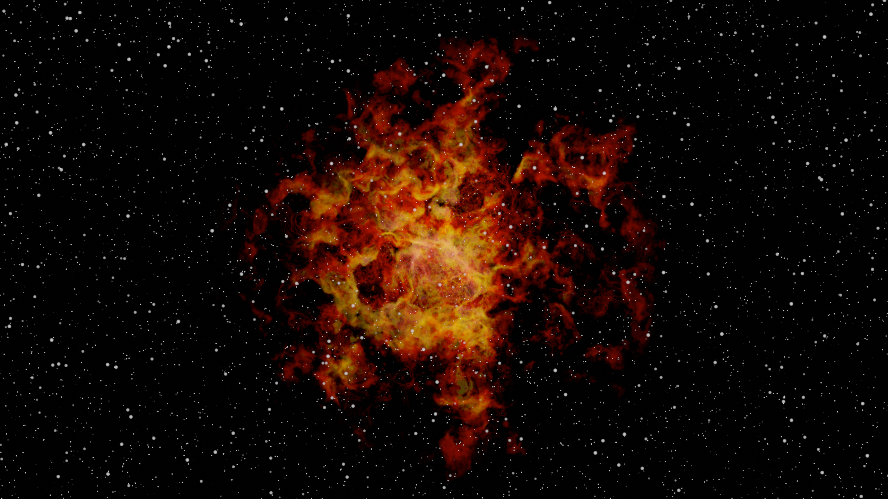

Georgi, Teo og Mareks
🚀 Naturfags prosjekt
Dette er solen, en stjerne🥵🥵
Stjerners lisvløp går over mange millioner år og gjennom mange faser.
📜Her er tre fun-facts ting om stjerner
1.
Solen er en stjerne...(*￣０￣)ノ
2.
Stjerner har forskjellige farger etter temperaturen. Hoved fargene er hvit, blå, oransje, gul og rød.
Note: Fargene er tilfeldig generert så bare oppdater siden og det var ikke bedre fargeverdier som vi kunne bruke.
klikk her for animasjonen
3.
En dag vi solen suge til seg jorden.🥶
klikk her for animasjonen
“No”
-Rosa Parks
...(*￣０￣)ノ Det første steget i livssyklusen er en stellar nebula
Stellar Nebula (Støv + Gass): En tåke er en stor sky av støv og gass, hovedsakelig hydrogen, som finnes i rommet. Dette er det første stadiet i livsløpet til en stjerne. Tyngdekraften får gassen og støvet til å begynne å klumpe sammen og etter hvert danner det en protonstjerne.
Note: klikk på bilde for å laste ned bilde i full kvalitet.
Laget av oss i blender💀
klikk her for flere bilder
🌮Steg 2
Hovedseriestjerne
Når protostjernen har samlet nok masse og trykk, begynner kjernefysisk fusjon, og den blir en hovedseriestjerne. Dette stadiet er der flertallet av en stjernes liv blir brukt. Stjernen produserer energi ved å fusjonere hydrogen til helium i sin kjerne.
Etter massen til stjernen
Er det neste steget enten/eller
Rød kjempe
Rød super kjempe
...(*￣０￣)ノMore info
This picture was created by us in blender💀
Rød kjempe
Når stjernen har brukt opp hydrogen brensel i kjernen, begynner den å fusjonere helium til tyngre elementer. Kjernen trekker seg sammen mens de ytre lagene utvider og avkjøles, og skaper en rød kjempe. Stjernens ytre lag kan etter hvert utvide seg til punktet der de omkringliggende planetene eller månene blir slukt.
Rød super kjempe
I mer massive stjerner vil stjernen etter hvert bli en super rød kjempe når den begynner å fusjonere tyngre elementer. Disse stjernene kan nå enorme størrelser og volum, og kan til og med bli ustabile og eksplodere som en supernova.
...(*￣０￣)ノ Steg 1 etter Rød Super kjempe
En supernova er en kraftig og eksplosiv stjernedød. Når en stjerne når slutten av sitt liv og har brukt opp alt sitt brensel, kan kjernen kollapse og sende ut en enorm mengde energi og materie i en enorm eksplosjon.
Note: klikk på bilde for å laste ned i full kvalitet
Note: Blender💀
klikk her for å laste ned animasjonen
Det neste steget er enten en nøytronstjerne eller et svart hull!
...(*￣０￣)ノ nøytronstjerne
Hvis stjernen er stor nok, kan dens kjerne etter en supernova-kollaps bli til en nøytronstjerne. Dette er en ekstremt tett og liten gjenstand som består av nøytroner.
Eller!
...(*￣０￣)ノ Svart Hull
Hvis stjernen er enda større, kan kjernen kollapse til eteneste punkt med uendelig tetthet og gravitasjon - dette kalles et svart hull. Ingenting kan unnslippe et svart hulls gravitasjon, ikke engang lys, og derfor kan de ikke observeres direkte. Deres eksistens kan imidlertid påvises ved effekten de har på omkringliggende gjenstander, som for eksempel stjerner eller gassskyer, som kan kastes ut i en høy hastighet når de blir fanget av det svarte hullets gravitasjon.
Note: Klikk på bilde for å laste det ned i full kvalitet
Blender💀
klikk her for å laste ned videoen
klikk her for flere animasjoner.
Nå, la oss se på livet til en stjerne hvis de blir til en rød kjempe
...(*￣０￣)ノ Hvit Dverg
Til slutt går stjernen tom for brensel, og de ytre lagene driver bort. Kjernen til stjernen forblir og blir til en hvit dverg. En hvit dverg er en tett, varm gjenstand som langsomt avkjøles over tid.
...(*￣０￣)ノ Svart Dverg
Over tid vil en hvit dverg til slutt avkjøles til det punktet hvor den ikke lenger sender ut betydelige mengder stråling, og blir til en svart dverg. Denne prosessen tar billioner av år, så ingen svarte dverger er observert ennå.
Thanks for watching!^_~